Minimap, world map and fog of war for Unity — ByteLura
Gallery
MiniAtlas Pro in the Atlas Tour sample and the editor. The frames below are real captures from the shipped sample and the editor window, plus typographic plates that state what the package does in plain words. Nothing here shows a populated world map: the sample tour is a bare-prototype board, and the frames show it as it is.
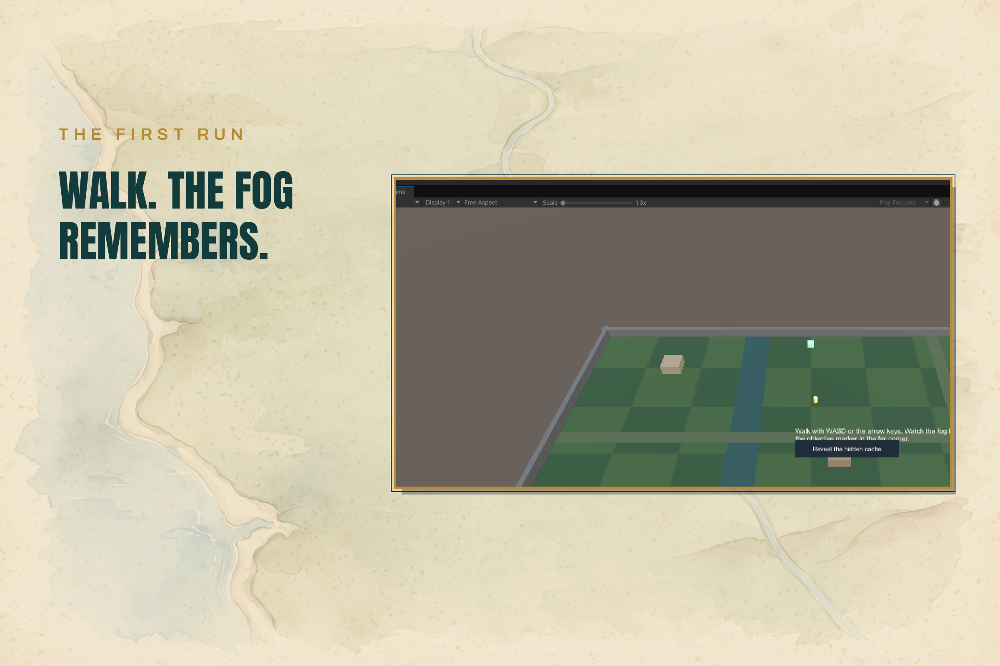
The first run — walk. The fog remembers. The capsule explores the walled ground while fog lifts around it.
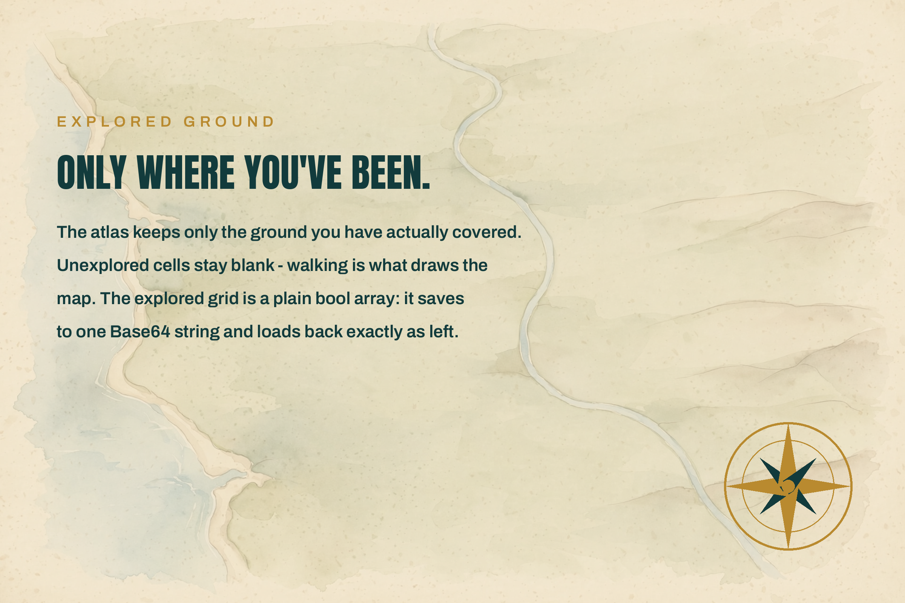
Explored ground — only where you’ve been. Fog is memory of where the player has actually been.
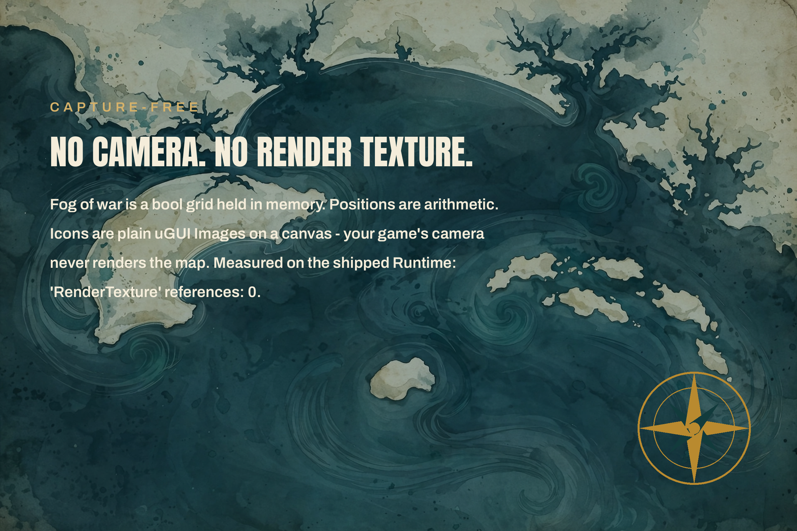
Capture-free — no camera. No render texture. The map is drawn from your world, not rendered by a second camera.
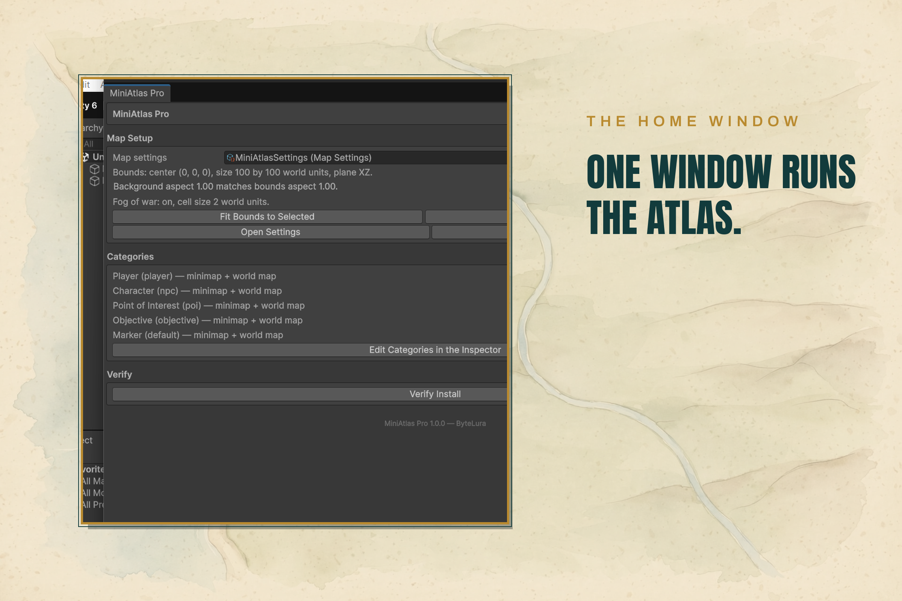
The home window — one window runs the Atlas. Map setup, categories and verification in one place.
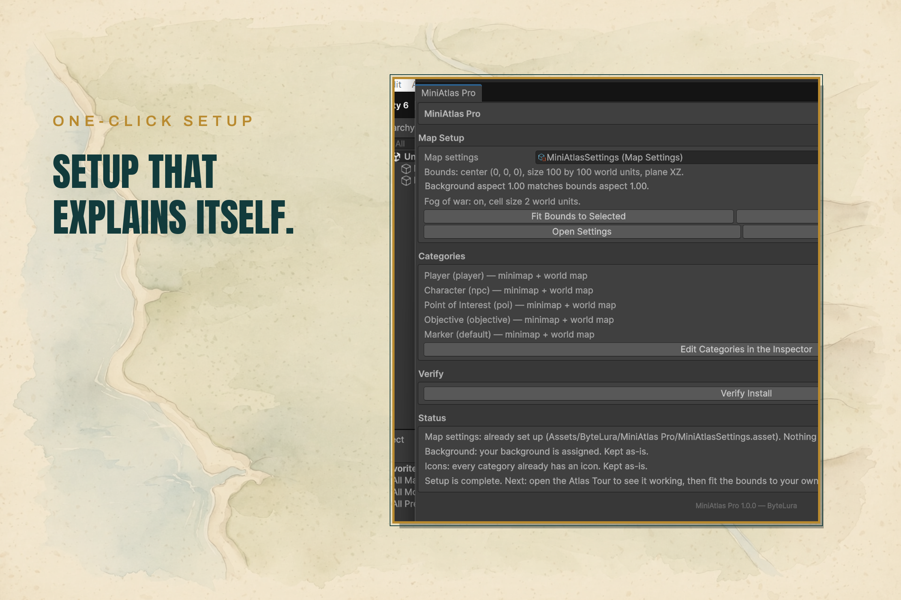
One-click setup — setup that explains itself. Select your ground, fit the bounds, and the map is calibrated.
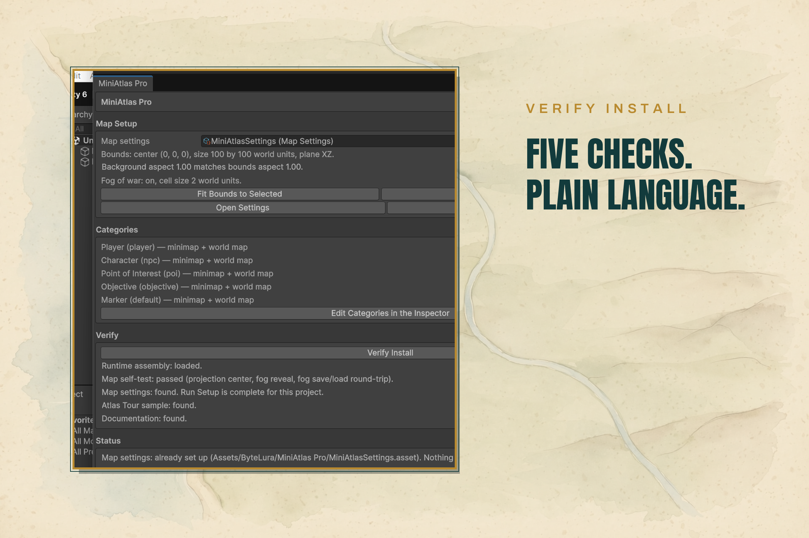
Verify install — five checks. Plain language. The editor checks the setup and says what is wrong in plain words.
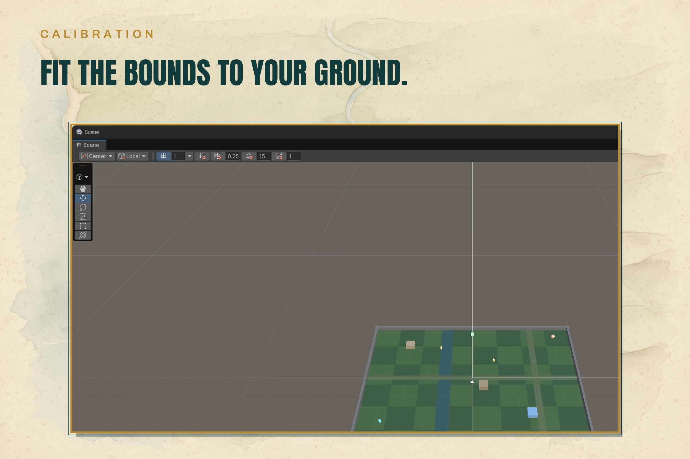
Calibration — fit the bounds to your ground. One projection converts world positions to map positions and back.
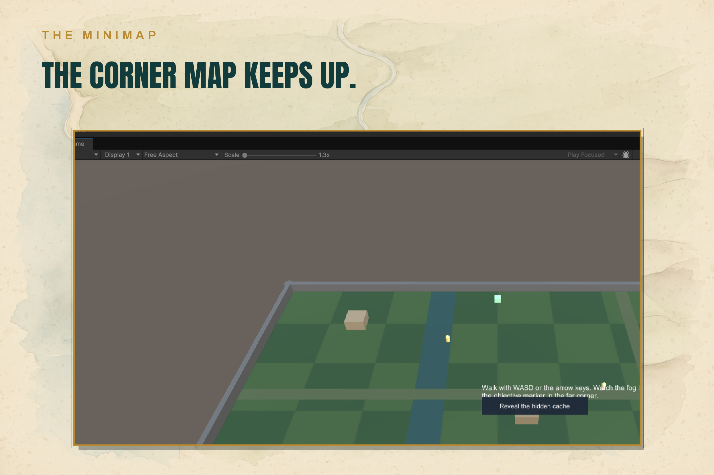
The minimap — the corner map keeps up. The minimap follows the capsule across the explored ground.
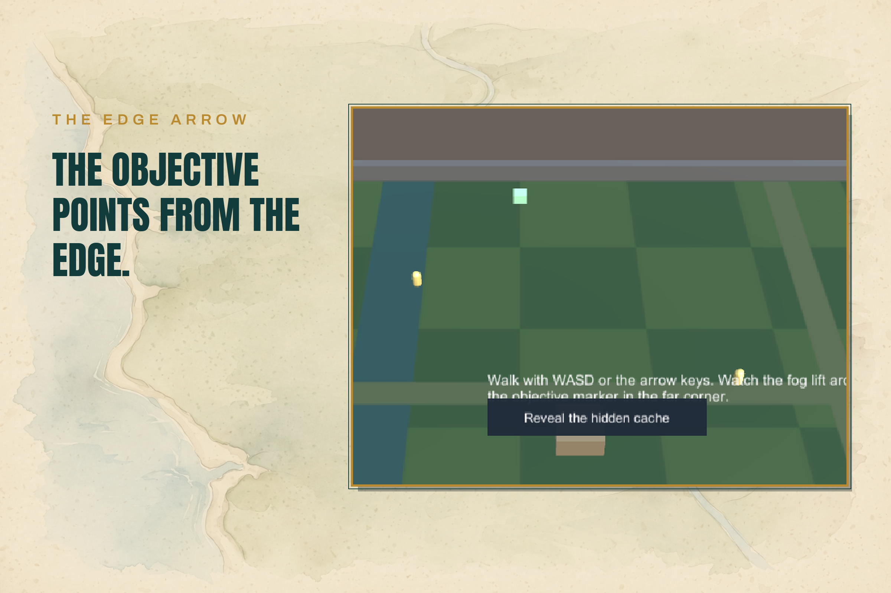
The edge arrow — the objective points from the edge. An off-view objective shows as an arrow at the minimap border.
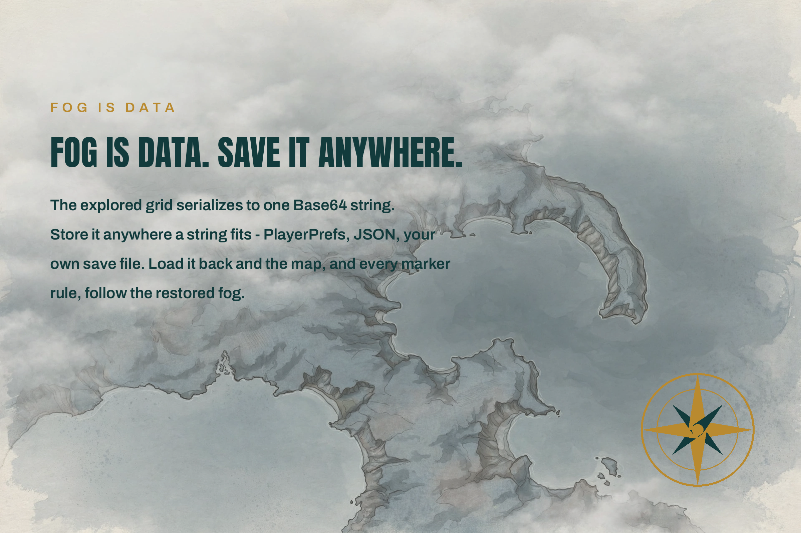
Fog is data — save it anywhere. The explored state saves as bytes or a Base64 string for your own save system.
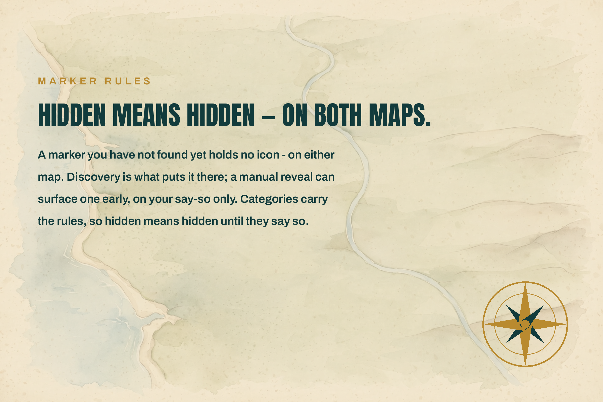
Marker rules — hidden means hidden, on both maps. A marker failing its fog rule is hidden on the minimap and the world map.
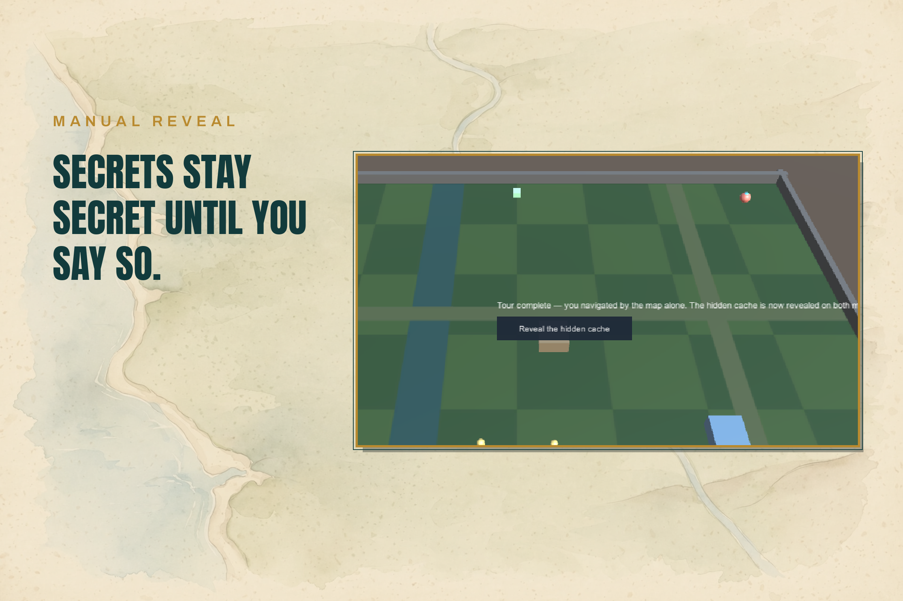
Manual reveal — secrets stay secret until you say so. The objective marker, the completion line and the Reveal button.
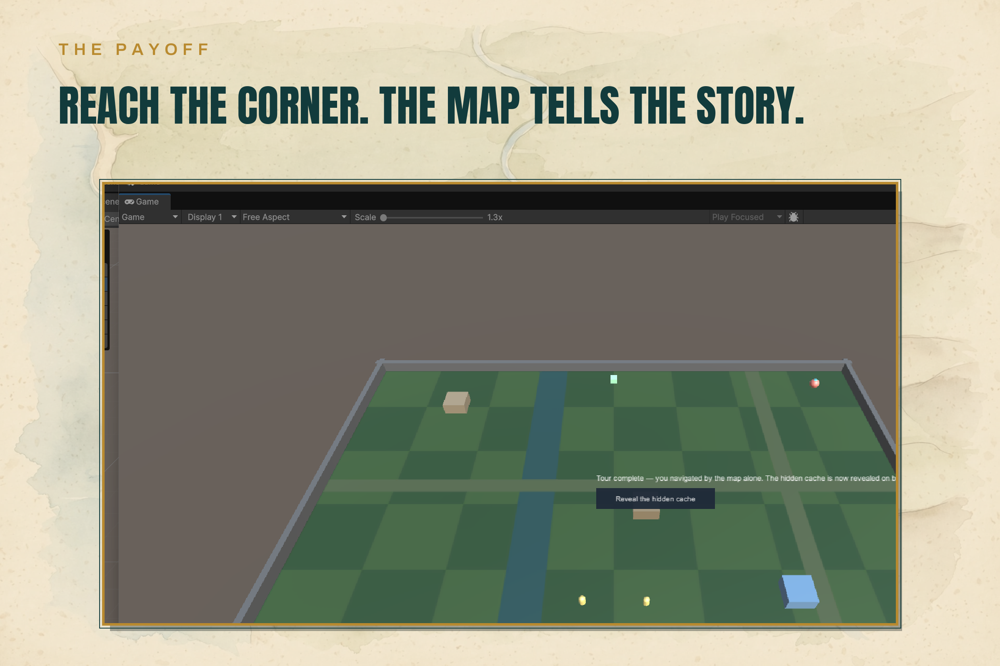
The payoff — reach the corner. The map tells the story. The completed tour: the board fully explored.
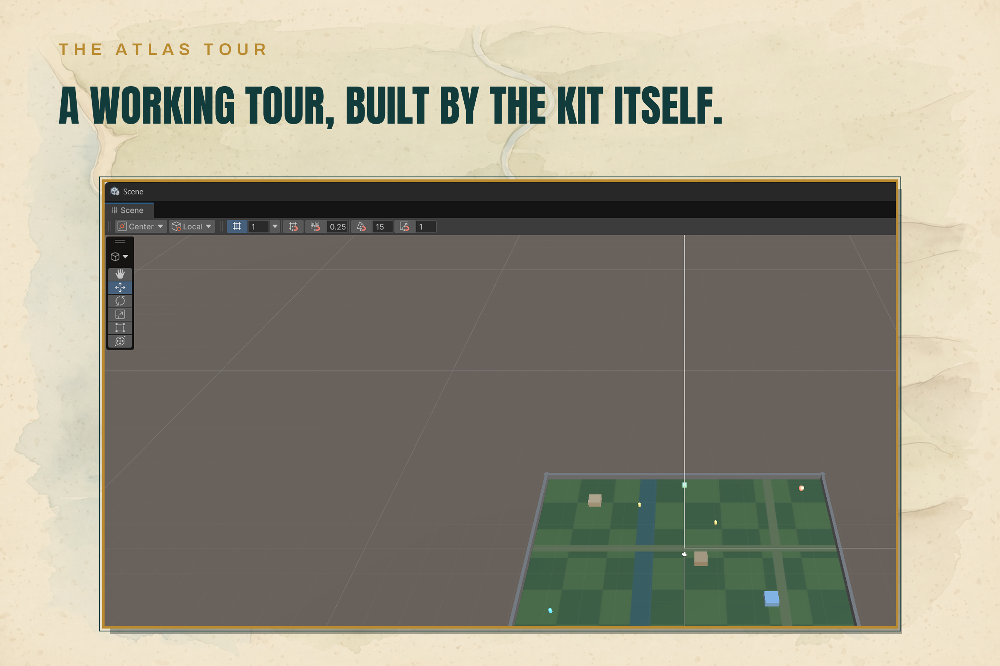
The Atlas Tour — a working tour, built by the kit itself. The scene is generated by a shipped builder, using only the public API.
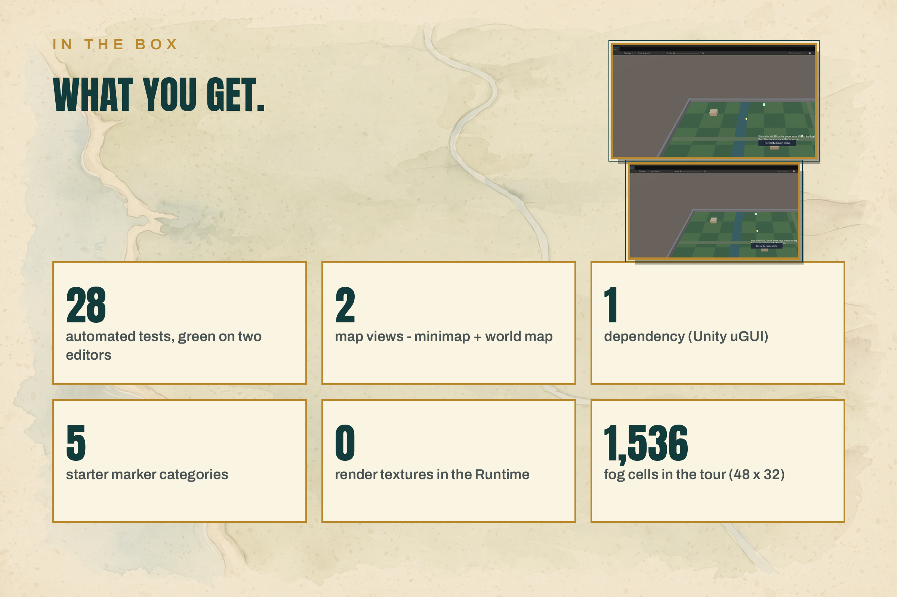
In the box — what you get. The package contents at a glance.